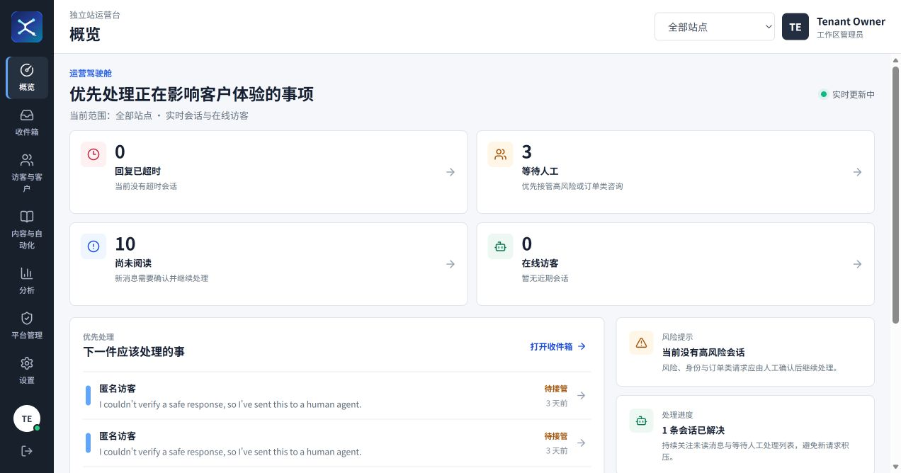

事实与语义知识分源
价格、库存和 SKU 由 PostgreSQL 决定，向量检索只负责解释，精确匹配失败时不拿相似商品替代。
Featured Case Study
2026.07 中旬启动 · 公司内部核心项目 · 独立端到端交付

不把知识库简单接给模型，而是把模型放进一套由确定性身份、权限、风险、证据与人工接管规则约束的客服系统。
价格、库存和 SKU 由 PostgreSQL 决定，向量检索只负责解释，精确匹配失败时不拿相似商品替代。
订单、退款、支付和高风险请求由确定性规则拦截，模型不能选择租户、降低风险或执行不可逆动作。
新知识先暂存并核对 Manifest、商品快照与向量点位，通过后才切换，失败时保留上一完整版本。
人工接管是持久化业务状态。客服接管后，新的访客消息不会让 AI 自动夺回会话所有权。
Verified Engineering Evidence
Selected Work
Contact